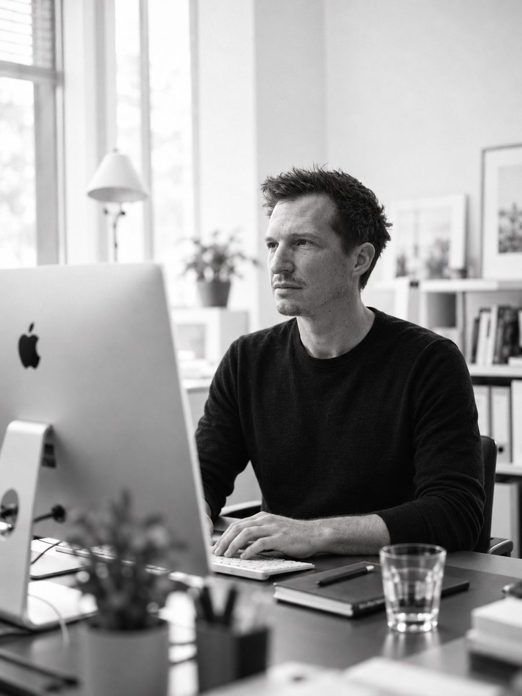

Aboutme
Philipp · Zürich
Apps shaped by everyday life. For people with visual impairments and the professionals who work with them.

My name is Philipp and I live in Zurich.
I am a special needs educator working with children and young people with visual impairment. Today I lead a team that supports and advises these pupils in their schools.
In everyday work I often see where things get stuck. A worksheet a child cannot fill in on the iPad. A text set too tightly. A program that only works with an account or the internet.
My apps grow out of moments like these. They are made for people who see poorly or not at all, and for the professionals who work with them.